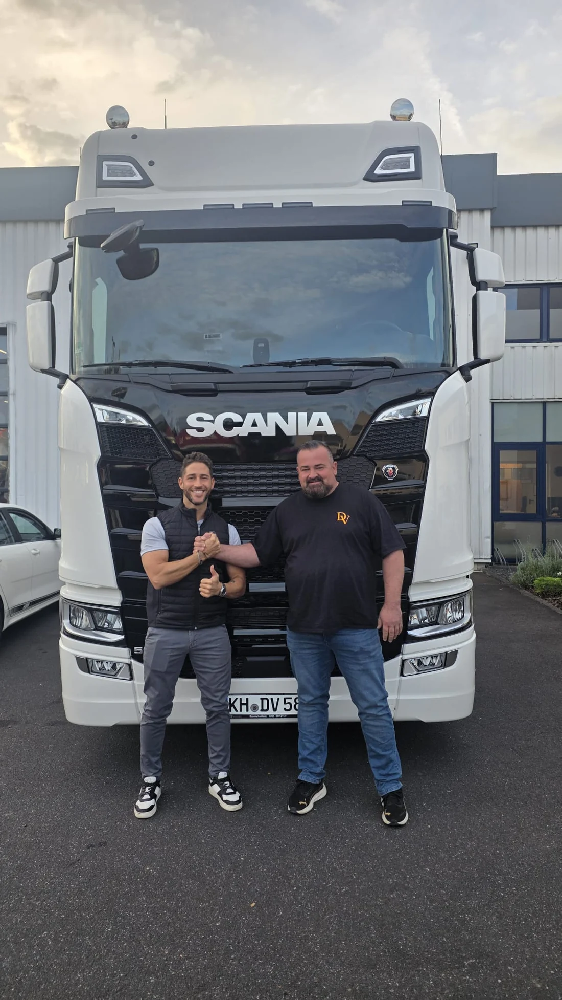

VON WEINSHEIM.
FÜR IHREN WEG.
Persönlich geführt. Deutschlandweit im Einsatz. DV Transporte verbindet einen wachsenden Fuhrpark mit direkter Zusammenarbeit.
 UNSER ANTRIEB: WEITERKOMMEN.
UNSER ANTRIEB: WEITERKOMMEN.KLARE ABSPRACHEN.
GEMEINSAME RICHTUNG.
DV Transporte ist in Weinsheim zu Hause und deutschlandweit unterwegs. Unser Schwerpunkt liegt auf klassischen Speditionsleistungen: Teil- und Komplettladungen, Sonderfahrten und Planenverkehr.
Daniel Vlasin führt das Unternehmen persönlich. Für Sie bedeutet das einen direkten Ansprechpartner – von der ersten Anfrage bis zur Abstimmung Ihrer Tour.
Der Fuhrpark wächstDER ZEHNTE LKW.
DER ZEHNTE LKW.
DER NÄCHSTE SCHRITT.
Mit dem zehnten Fahrzeug erweitern wir unsere Transportkapazitäten. So schaffen wir mehr Möglichkeiten für laufende Dispositionen und neue Aufträge.
Kapazität anfragen
EinblickeMENSCHEN.
MENSCHEN.
MASCHINEN. MOMENTE.


{kind=link}
Nächster Halt: Ihr Auftrag.Persönlich abstimmen
WAS BEWEGENWIR FÜR SIE?
Abholort. Zielort. Ladung. Termin.
Wir klären den Rest persönlich mit Ihnen.